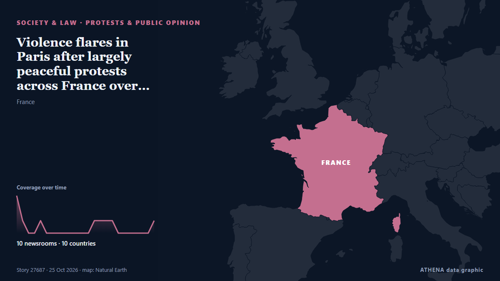

Violence flares in Paris after largely peaceful protests across France over living costs, inequality

The Interior Ministry said 410,000 people took part in protests nationwide. from The Straits Times
Reported independently by 10 outlets in 10 countries since 24 Oct, first by Anadolu Agency (English); coverage is fading. ATHENA rates the risk elevated (4.2/10), driven mainly by the severity of the harm described and its geographic and sector reach. Confidence is 89% (high), with 10 independent outlets corroborating it and an average source reliability of 76%. Newsrooms by country: Cyprus (2), Turkey (1), Belize (1). Coverage: 24 Oct to 25 Oct, 24 hours.
Why it matters: Legal and policy changes alter rights, obligations and public services for the people they reach.
What changed: 10 new reports from 9 newsrooms in the 24 hours to 25 Oct.
At a glance
Selected, scored and written by ATHENA's published methodology. No editor intervenes in individual events. How this is produced ›
| 24 Oct 14:27 UTC | 3 |
|---|---|
| 24 Oct 15:27 UTC | 1 |
| 24 Oct 16:27 UTC | 0 |
| 24 Oct 17:27 UTC | 0 |
| 24 Oct 18:27 UTC | 1 |
| 24 Oct 19:27 UTC | 0 |
| 24 Oct 20:27 UTC | 0 |
| 24 Oct 21:27 UTC | 0 |
| 24 Oct 22:27 UTC | 0 |
| 24 Oct 23:27 UTC | 0 |
| 25 Oct 00:27 UTC | 0 |
| 25 Oct 01:27 UTC | 0 |
| 25 Oct 02:27 UTC | 0 |
| 25 Oct 03:27 UTC | 1 |
| 25 Oct 04:27 UTC | 1 |
| 25 Oct 05:27 UTC | 1 |
| 25 Oct 06:27 UTC | 1 |
| 25 Oct 07:27 UTC | 0 |
| 25 Oct 08:27 UTC | 0 |
| 25 Oct 09:27 UTC | 0 |
| 25 Oct 10:27 UTC | 0 |
| 25 Oct 11:27 UTC | 0 |
| 25 Oct 12:27 UTC | 0 |
| 25 Oct 13:27 UTC | 1 |
| 24 Oct 14:49 UTC | 2.7 |
|---|---|
| 24 Oct 15:04 UTC | 3.4 |
| 24 Oct 15:52 UTC | 4.5 |
| 25 Oct 14:14 UTC | 4.2 |
Why these numbers
Importance
Risk
Confidence
The reporting — who reported it, and when
headline as published · opens the original- Anadolu Agency (English) · TurkeyThousands gather in Paris to protest rising living costs, poor teaching conditions
- Breaking Belize News · BelizeInternational News: France deploys 70,000 police as demonstrations continue over cost of living
- Cyprus Mail · CyprusFrance deploys 70,000 police to try to contain nationwide protests
- The Korea Times · South KoreaThousands march in France over schools and living costs as police use tear gas
- The Straits Times · SingaporeViolence flares in Paris after largely peaceful protests across France over living costs, inequality
- CGTN (World) · ChinaViolence flares in Paris after largely peaceful protests across France
- The Kathmandu Post · NepalViolence flares in Paris after largely peaceful protests across France
- Cyprus Mail · CyprusFrance protests turn violent as 410,000 march against rising living costs
- SABC News · South AfricaViolence flares in Paris after largely peaceful protests in France
- CNBC World · United StatesIn pictures: Protests over inequality, rising living costs turn violent across France